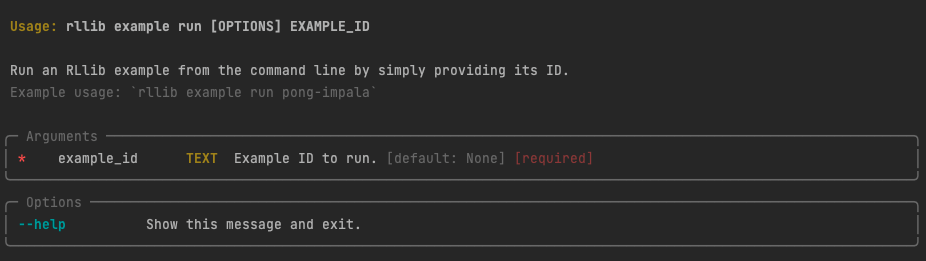

Working with the RLlib CLI
Contents
Working with the RLlib CLI#
RLlib is built in Python and if you’re an advanced user, you will primarily use its Python API to build and run your experiments. But RLlib also comes with a command line interface (CLI)1 that allows you to quickly run and evaluate experiments without having to write any code.
You can also run pre-defined RLlib examples with it. This is useful for quickly testing out RLlib, or for running experiments that are simple enough that they don’t require any custom code.
Running your first example#
Let’s say you want to run an RLlib experiment on the CartPole gym environment,
using an example built for you by the RLlib team.
Searching for examples#
The first thing you can to is filter the list of all available examples by the environment name you want to use:
This will return a list of Example IDs and their descriptions.
You can pick any example you want, but for this tutorial we’ll use the PPO algorithm
and go with the example ID cartpole-ppo.
Inspecting examples#
If you’re interested in checking out the specification of this example, you can do so by typing the following CLI command:
The output will be a prompt in the YAML format that contains the configuration of the example.2 We’re not going to go into the details of the configuration here, but you should know that it’s a tuned example, meaning that you can expect it to train well out of the box.
Here’s the output of the above command (parsed as YAML for readability):
cartpole-ppo:
env: CartPole-v1
run: PPO
stop:
sampler_results/episode_reward_mean: 150
timesteps_total: 100000
config:
# Works for both torch and tf.
framework: torch
gamma: 0.99
lr: 0.0003
num_workers: 1
observation_filter: MeanStdFilter
num_sgd_iter: 6
vf_loss_coeff: 0.01
model:
fcnet_hiddens: [32]
fcnet_activation: linear
vf_share_layers: true
enable_connectors: true
Running tuned examples#
Let’s run the example next!
After showing how to start the training run, we give you some sample output of it below.
Note that by default, RLlib will create an indicative experiment name for you, and logs
important metrics such as the reward, the episode_reward_max, or the
episode_reward_min.
In the output of the training run, you should also see information about the machine
(loc, host name and port), as well as the status of your training runs.
If your run is TERMINATED, but you’ve never seen a successfully RUNNING experiment
in the log, something must have gone wrong.
+-----------------------------+----------+----------------+
| Trial name | status | loc |
|-----------------------------+----------+----------------|
| PPO_CartPole-v0_9931e_00000 | RUNNING | 127.0.0.1:8683 |
+-----------------------------+----------+----------------+
Also, when the training run finishes, you should see the following output:
Your training finished.
Best available checkpoint for each trial:
<path-to-a-checkpoint>/checkpoint_000008
You can now evaluate your trained algorithm from any checkpoint, e.g. by running:
╭────────────────────────────────────────────────────────────────────────────────────────────╮
│ rllib evaluate <path-to-a-checkpoint>/checkpoint_000008 --algo PPO │
╰────────────────────────────────────────────────────────────────────────────────────────────╯
In other words, you can now evaluate your trained algorithm from this (or any other)
checkpoint with the rllib evaluate command.
We’ll come back to this command later.
This completes your first example with the RLlib CLI.
You now know about the list, get, and run sub-commands, and how to use them
to run tuned examples with RLlib.
Getting help#
You can request help for the RLlib CLI simply by adding --help at the
end of any command, for instance by typing
rllib example --help, or rllib example run --help.
If you run the latter, you’ll see the following output:

This output clearly shows you that therun sub-command has one mandatory argument,
namely an example_id.
Many other commands have many more arguments and options, so it can be a good idea to check out the help output for them occasionally.
Starting training runs#
If you want to do more than just use the examples that come with RLlib,
you can also run your own algorithm configurations with rllib.
That’s what you use the rllib train command for.
There are two basic ways to run training. You can either provide all the necessary information via the command line, or simply point to a configuration file (like the YAML we’ve already seen in the previous section). Let’s briefly go over both options, starting with the recommended one.
Training from file#
To train from a configuration file, you can use the rllib train file sub-command.
It works by either providing a path to a local file, or a URL to a remote file.
Here’s an example that uses one of the examples hosted in the Ray GitHub repository:
The -t or --type option is used to specify the type of the configuration file,
in this case python, since we’re using a Python file.
This is what the Python configuration of this example looks like:
# Run with:
# rllib train -f cartpole_simpleq_test.py\
# --stop={'timesteps_total': 50000, 'episode_reward_mean': 200}"
from ray.rllib.algorithms.simple_q import SimpleQConfig
config = (
SimpleQConfig()
.environment("CartPole-v1")
.framework("tf")
.rollouts(num_rollout_workers=0)
)
You can define your own Python examples by creating a Python file that contains
a variable called config of type AlgorithmConfig and an optional Python dictionary
called stop that defines stopping conditions.3
If you’re interested in other configuration file types, you can check out the following drop-down. Apart from Python, you can also use YAML or JSON.
Training from a file is the recommended way to run training with RLlib, because you can just modify the file and run the same command again. For quick tests and experiments, however, you can directly provide the configuration via the command line.
Training from configuration options#
By dropping the file sub-command, you can directly provide the configuration options
of your experiment as command line arguments.
For instance, to run training with PPO on a CartPole environment, you can use the
following command directly:
The advantage is that you don’t need to create a configuration file, but the downside
is that your CLI command can get quite long and complicated.
The --config option is used to provide a JSON string that contains the configuration
that you would otherwise put in your YAML or JSON config files.
The train command has many more options that we don’t discuss in detail here,
but you can use the following dropdown to read more about their definition:
Probably the best way to get familiar with rllib train is to run
rllib train --help and play with your own experiments.
Evaluating your experiments#
Successful training runs generate checkpoints whose performance you can evaluate
with the rllib evaluate command.
By default, checkpoints are generated in ~/ray_results/<experiment>/checkpoints/...,
and you can use can provide the full path to a checkpoint as argument to the evaluate
command.
If you’ve run an rllib train run locally, you could use such a checkpoint to evaluate
its performance, but for testing purposes you can also evaluate an untrained algorithm
by simply omitting the checkpoint argument:
Note that the evaluate command needs to know about the algorithm and environment
you want to evaluate.
The overall structure of the command itself is slightly simpler than its train
counterpart, as there are simply fewer options to configure.
Where to go from here?#
Now that you know the three basic commands of the RLlib CLI, namely train, evaluate
and example, you have all the tools you need to run simple RLlib experiments from
the command line.
If you want to learn more about the capabilities of RLlib, you have to learn more about its Python API and how to configure algorithms in the first place.
- 1
The RLlib CLI is built with Typer and uses Rich text formatting for convenience.
- 2
Many of the pre-defined examples are written in YAML, but you can also use JSON or Python files. The CLI will automatically detect the format of the file you’re using.
- 3
These stopping conditions are internally picked up by Ray Tune, which is used by RLlib under the hood.